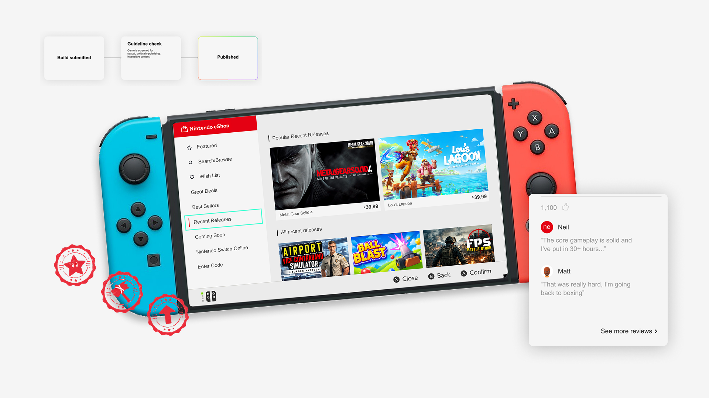

Faculty of environment
Introduction
Over my 4-month co-op term, I worked with the Faculty of Environment to create content that promoted sustainability and the environment to prospective students. This role allowed me to exercise the variety of disciplines taught to me in school, giving me the chance to showcase my skills in web design and marketing media.

Highlights
Visit the website here.

Some motion graphics I made for the social media series. I took every opportunity to be original and I made the most of it XD.
The mission
The redesign aimed to increase user retention and better engage prospective students. The main pain point of the existing sites was that they were heavily text-based, which made it hard for users to engage with the content. My job was to balance visual communication with information using the university's existing resources to redesign the current pages as well as build new ones that matched the university's mission and visual identity.

Guidelines

Brand guidelinesThe environment faculty's brand guidelines also called for consistent use of a variety of greens. 'Cause, you know... it's the environment faculty.

WCMISAll Waterloo pages run on WCMIS, the university's own version of WordPress. It limits layout to a set of pre-approved templates and components, so Waterloo sites stay consistent no matter which intern is building them.

Student and Advisor ApprovalFor the redesign to count as a real improvement, each iteration needed feedback from both my advisors and fellow students. I used that feedback to check the clarity, visual hierarchy, usability, and overall effectiveness of each concept.
Process
Each design iteration followed the same process. I started in Figma, sketched a few rough prototypes, then brought them to the student body for feedback. Once I settled on a direction, I built the final version in WCMIS.


Design validation
Most of the redesign meant replacing text-heavy sections with more visually engaging ones.


Opinions from my advisor and other students:
“This takes longer to scroll through which could affect user focus”
— advisor
“I prefer this one because there's more breathing room”
— a student
“Looks nice”
— my mom
“I like this one because it takes up less space”
— my advisor
“I feel very overwhelmed looking at all the options”
— a student
“Looks nice”
— my mom
Marketing: Social media campaigns
Alongside building websites, I produced a series of social media posts for the Faculty of Environment's Instagram, promoting student life across the faculty.
Visit the instagram page hereENVoicesThe ENVoices series gives the Faculty of Environment's student body a platform to share their perspectives on their programs. Each interview features a student from a different program, answering questions related to their program.
What Goes On In A LabThis series gives prospective students a peek into what coursework in the faculty might look like, both in and outside of the lab.
Enviews / The ScoopThe Scoop, also called Enviews, was an ongoing series where my co-worker and I interviewed random students on campus to create more community-focused content. It pushed me past my usual ideas and out of my comfort zone.
My takeaways
Communicate Everything
Working with others has taught me the importance of clear and consistent communication. Keeping coworkers updated on changes and progress helps make the workflow more efficient.
Ask the Right Questions
Interviewing students for ENVoices showed me how much the quality of a question can shape an interview. Taking the time to plan what I want to learn and prepare thoughtful questions beforehand leads to more meaningful responses.
Always Be Ready to Adapt
Working has taught me that ideas don’t always go as planned. I’ve often had to let go of existing ideas or content and start from scratch. Learning to recognize when something isn’t working and being willing to pivot is an important part of the process.
Next project
